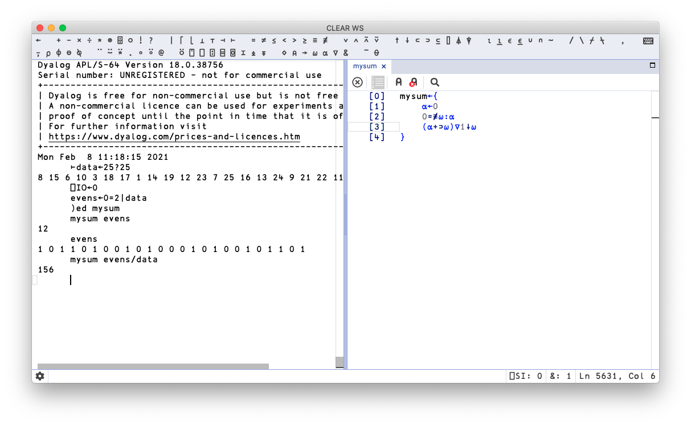
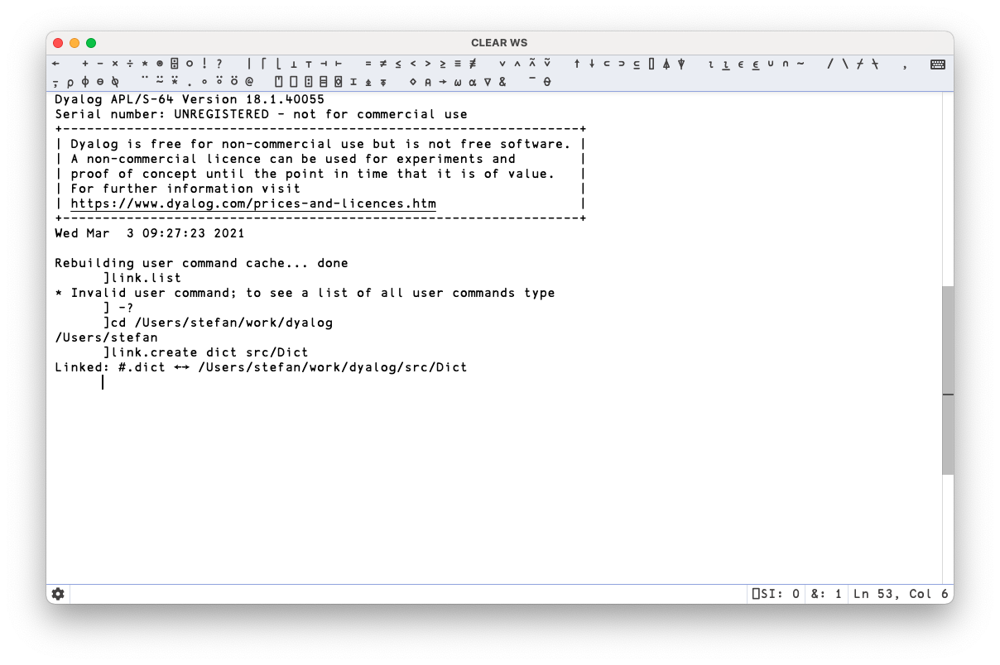

A Dyalog workflow. Or two.¶
I don’t know how many of you have ever met Dijkstra, but you probably know that arrogance in computer science is measured in nano-Dijkstras. –Alan Kay
For the majority of the examples we’ll encounter in this book, you can just type them directly into the Dyalog IDE, or TryAPL, and when you understand the point made, scrap them. But as you progress, sooner or later you will want to save your work to disk.
If you have a similar background to me, you’ll expect to be able to write your code using an editor of your choice, arranging it into files containing logically related routines, which you then put into a source code revision management system, like git, perhaps triggering a build and test pipeline on every commit via something like jenkins or circle-ci. This is most likely in the neighbourhood of your current workflow, regardless of which language or platform you’re using, from ADA to Zig.
Before we get into the practicalities of how you can do this and more, we’ll need a slight diversion into the history of APL and Dyalog in particular [Kromb&Hui2020]. Firstly, APL predates all these workflows and build tools. That in itself isn’t an issue: so does C. But APL wasn’t really conceived as a software engineering tool. During its heyday, middle management and CFOs were slinging APL to generate forecasts and reports, and they loved APL as it allowed them to essentially perform tasks that up until then had been in the realm of specialist “batch processing” on the company mainframe. It essentially occupied the niche which is now dominated by Microsoft Excel.
This influenced all APL vendors. Commercial APL systems are full application stacks that make it seductively convenient to package up your work as binary workspaces that can be easily distributed to other APL users without ever having to “leave” the confines of the stack itself. In terms of Dyalog, its tooling and development philosophy supports this world view, as that is what its customers expect: professional Dyalog developers working for billion-dollar financial institutions will be of the opinion that you can pry their binary workspaces from their cold, dead hands. You can build fully-fledged, GUI-driven applications integrating deeply with code bases written in .NET.
Yet, for you, the newcomer, this approach will probably feel a bit alien. Dyalog obviously understand this, and they’re walking the tightrope of both delivering what their current paying, long-term customers need, but also a keen eye on what new users and potential customers might be looking to. Morten Kromberg, Dyalog CTO, wrote a blog post recently, ostensibly about the APL Orchard chat room, but also touching on some of Dyalog’s challenges when dealing with this dichotomy.
Fortunately, and for the avoidance of any doubt, you can absolutely work with modern Dyalog (I’m using version 18.0) in a pretty similar way to what you expect, but it requires a little bit of setup to get right, and is not quite there “out of the box” at the time of writing. However, at the time of reading some of the kinks may well have been ironed out: better support for Dyalog as a scripting engine, and working with code-as-text is a priority for Dyalog right now.
So let’s take a brief look at workspaces and then at the ]LINK tool that allows you to keep your code in text files that can be versioned.
Other resources:
Dyalog webinar
Saving and loading workspaces¶
If you open RIDE, you’ll see no “Save as..” in the menu, and your OS’s default key binding for “Save” does nothing. You might have figured out how to enter multi-line functions, and how to “fix” (somewhere between “save” and “compile”) them. Yet, when you “fix” a function, where does it go?
At no point were you asked for a file name. The Excel analogy might help to clarify. Think of a cell containing a formula in Excel – you’re not expecting to “save” the formula out to a separate file. Instead, the formula becomes an integral part of the sheet or workbook. We can think of Dyalog workspaces as analoguous to Excel workbooks: a snapshot of values and logic to manipulate them. It has the nice feature that if you distribute a workspace, you can be sure that users of that workspace sees exactly what you intended: it’s an exact snapshot.
Let’s try this out. In a new RIDE session, let’s create a few functions and variables, like so: 
To save the workspace into a workspace file, type
)save myworkspace
Cannot perform operation with trace/edit windows open.
Ooops, that didn’t work. Dyalog can only save a workspace if you close down all edit windows first. So let’s do that, and once you’ve saved your workspace, close down the session and reopen a fresh one.
To get back your workspace, type
)load myworkspace

We can use the commands )vars to see the defined variables, and )fns to show the names of any functions contained in the workspace. As we can see, they’re all present and correct. If you find yourself using a set of utility functions over and over, they might be usefully combined into a workspace that you can then load up as a unit with a simple )load command. As you might expect, the workspace concept is deeply engrained in Dyalog and it comes with rich, sophisticated, thoroughly battle-tested functionality – all of which is overkill for our needs right now. If you want to explore this further, Legrand’s book, Mastering Dyalog APL covers it extensively.
Using LINK¶
LINK is a Dyalog library that can be used to set up synchronisation between a directory of text files containing APL source code, and namespaces in your current workspace. As you may recall from the chapter on namespaces, one way to think of them is as a grouping mechanism akin to a module or class. Recent Dyalog versions come with LINK bundled, but it’s under active development and you can always install the latest version from the above link.
The LINK concept is pretty intuitive: a LINKed directory becomes a namespace, and all its content loaded. If you make a change to a file using an external tool or editor, that change will be reflected inside Dyalog, and if you make a change to the namespace inside Dyalog, these changes are reflected on disk. This means that you can write APL code in Emacs or VS Code, and have your Dyalog session see any changes you make. And – of course – now you can put your code in github with all that this entails in terms of your workflow.
Let’s work through a complete example, step by step, by building a “dict” – an array that gives the illusion of being indexable by string. Yes, you’re not the only one wishing Dyalog had one of those. Start by creating a new directory called dict and make a note of the full path:
stefan-% mkdir -p ~/work/dyalog/dict
Now, using an editor of your choice, you’re going to create five functions, each contained in a file with the .aplf extension (for APL function). Here’s me editing the first one in VS Code, called Create.aplf:

Note
One thing you’ll notice when editing APL code in VS Code is that as VS Code also uses the option key for certain commands, it becomes a bit more tricky to type APL glyphs. You can always use the backtick as the APL key for combos that VS Code hijacks.
Here are the functions themselves, leaving aside for the moment how they work (or indeed if they’re particularly good):
]dinput
Append←{⎕IO←0
⍝ Given a vector of keys and a vector of vals append vals
⍺∘{
k←0⌷⍵ ⋄ v←1⌷⍵
i←⍺.Keys⍳k
i=≢⍺.Keys:1⊣⍺.Keys,←k⊣⍺.Vals,←v ⍝ New key
⍺.Vals[i],←v ⍝ Append to existing
0
}¨↓⍉↑⍵
}
]dinput
Create←{
keys←(1500⌶),⍺
vals←,⍵
{⍵⊣⍵.(Vals Keys Default)←vals keys ⍬}⎕NS''
}
]dinput
Get←{
~⍵ In ⍺:⍺.Default
⍺.Vals[⍺.Keys⍳⍵]
}
In←{⍺∊⍵.Keys}
]dinput
Set←{⎕IO←0
⍝ Upsert ht ⍺ given a vector of keys and a vector of vals
⍺∘{
k←0⌷⍵ ⋄ v←1⌷⍵
i←⍺.Keys⍳k
i=≢⍺.Keys:1⊣⍺.Keys,←k⊣⍺.Vals,←v ⍝ New key
⍺.Vals[i]←v ⍝ Replace existing
0
}¨↓⍉↑⍵
}
Now open a new Dyalog session, and link this directory:
]LINK.Create dict /Users/stefan/work/dyalog/dict
You should see the following:
Linked: #.dict → /Users/stefan/work/dyalog/dict
If you see a pop-up window with an error message about the .NET bridge not being present, this is a known bug you can ignore, see issue 166.
All being well, our session should now be aware of the code we just wrote. We can list the functions that Dyalog now thinks the namespace contains by executing the following obvious and intuitive “list functions in namespace” command:
dict.⎕NL -3
Append Create Get In Set
Great! Our functions have clearly been loaded. Let’s see if they work, shall we?

LINK limitations¶
That works really well so far. Any change we make in RIDE to the dict namespace will be reflected on disk, including new functions, or modifications of existing. However, there are a few limitations you need to be aware of here. The eagle-eyed reader may have spotted our link being one-directional only:
Linked: #.dict → /Users/stefan/work/dyalog/dict
The arrow shows synchronization direction. Bi-directional sync is really what we want, but at the time of writing this is only available under Windows. Do read the docs for LINK.
In Dyalog version 18.1 (which at the time of writing isn’t formally released yet) you can get bi-directional ]LINK on non-Windows platforms if you also install Microsoft .NET Core 3.1.

The other thing is that when you’re working this way, you’ll need to keep each function, namespace, class, or operator in its own separate file, and they all have their separate file extensions, which if you’re anything like me is quite a fine granularity, especially since APL functions tend to be pretty short.
Dyalogscript¶
Also in Dyalog v18.1, a new feature called dyalogscript is present. For me, this is a bit of a workflow game changer. dyalogscript allows you to execute a text file containing APL code, top to bottom, with function definitions and all, from the command-line, following standard un×x conventions. This means that with this approach you can now use Dyalog for ‘quick and dirty’ scripts where you otherwise would have reached for Python, and that you can easily share code as files, or via a github gist and have other people run it. For example, I created the following file:

and can run it from the command line:

Jupyter workflow¶
As I’ve mentioned before, this book is composed of a set of Jupyter notebooks running the Dyalog kernel. APL is a pretty sharp tool for data analysis and ad-hoc modeling and experimentation, and as such fits neatly into the expectations and workflows that gave rise to Jupyter in the first place. The way I have ended up working with Dyalog APL is 75% Jupyter, 20% exploration and debugging in RIDE and 5% LINK for stuff I really think I might reuse.
Here’s a Dyalog webinar introducing the Jupyter kernel.